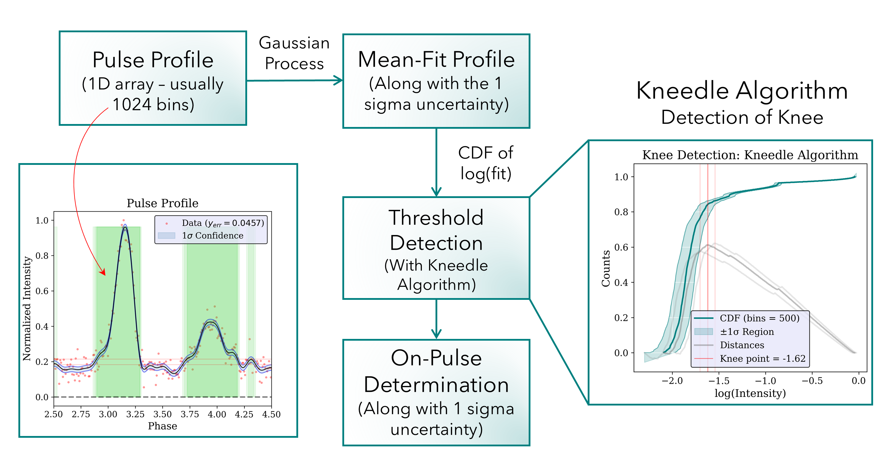
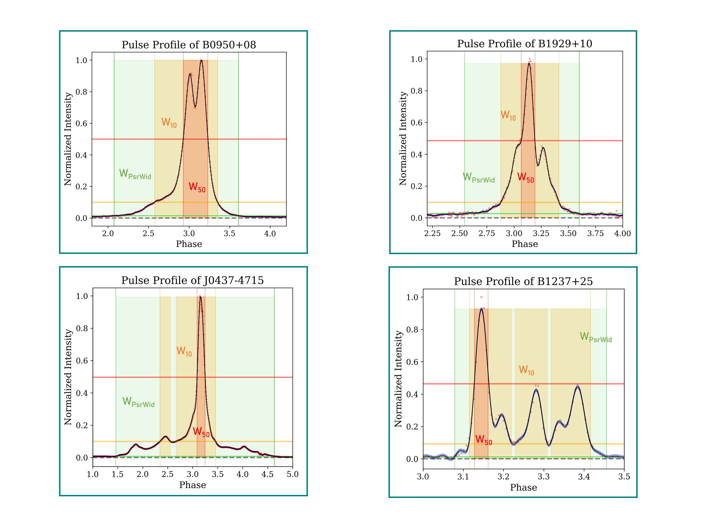
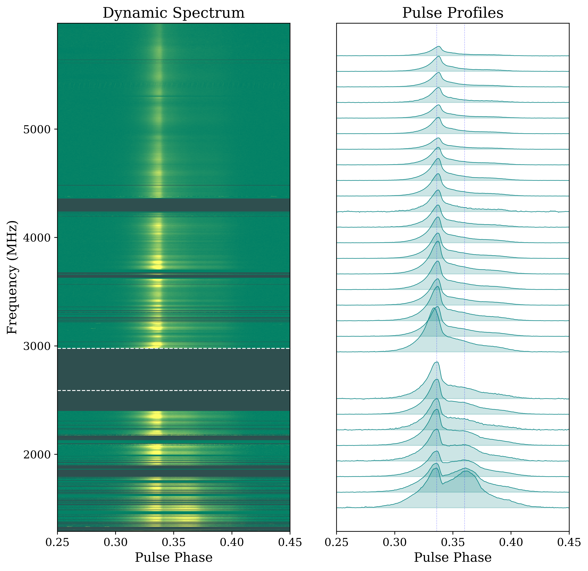
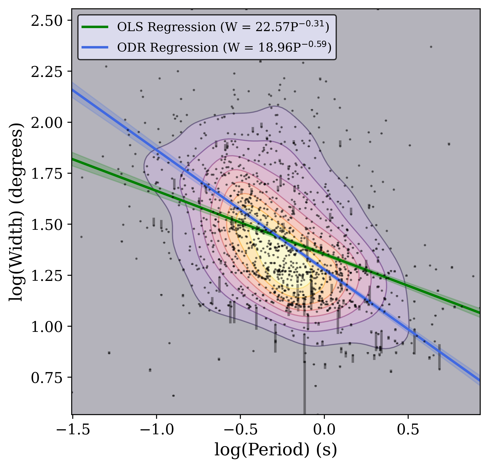

Characterizing Pulsar Emission Widths
Masters Thesis
Neutron stars are detectable when their emission beam crosses the observer’s line of sight. This beam is correlated with the structure of the pulsar magnetosphere. Accurately characterizing the duty cycle of the pulse profile is essential for understanding the beam structure and underlying magnetospheric processes. This project aims to identify on-pulse regions with uncertainties in the pulse profile and further automate the detection process. Traditional methods which are used to quantify emission widths, such as W50 (HPBW- Half Power Beam Width), W10 (width at 10% of the peak) sometimes misrepresent the true emission region, particularly for pulses with extended low-intensity wing or pulses with multiple components. To address this, I developed a Python-based algorithm that systematically identifies the emission region, which stands above the noise floor and is adequate to capture the complete profile structure.PsrWid Algorithm

To start with, data is first cleaned with median-based RFI flagging to produce a high SNR frequency scrunched profile. Further, this profile is fit with the non-parametric Gaussian Process Regression, which assumes no functional form of the profile with phase (Roberts 2012). This ensures the profile can be separated into two constituent parts, the signal and the noise, effectively yielding an optimized version of the noiseless profile. Then, to determine a threshold to separate the emission from noise, I implement the ’Kneedle’ algorithm (Satopaa et al. 2011), using the Cumulative Ditribution of the log-intensity. All intensity values above the detected threshold are called to be a part of the on-pulse region

Width Evolution of PSR B0355+54

I implemented this algorithm on various datasets to perform different analyses. I studied the frequency evolution of the pulse profile of PSR B0355+54 using the data from Effelsberg’s Ultra Broadband (UBB) receiver working range 1.2- 6 GHz. This pulsar has an interesting profile evolution with one of the component fading out in higher frequencies. I also included archival data from the European Pulsar Network (EPN), giving the advantage to study the variation over the wide-range of 102 MHz- 72 GHz. The width of the emission region decreases with an increase in the frequency with a power-law index of-0.24. In the lower frequency regime, the phenomenon of ’width absorption’ is observed as reported in (Xu et al. 2021), where below ∼ 1GHz, it does not follow the power-law anymore.
Widths of a Large and Diverse Sample of Pulsars

I derived the widths of a 1271 sample of pulsars observed with the MeerKAT telescope as a part of the Thousand Pulsar-Array (TPA) program (Posselt et al. 2021). Assum ing widths as a function of rotation period, this relationship is described from the data using orthogonal distance regres sion to compute the power-law index with µ = −0.59±0.02 as shown in the figure 1. The similar analysis was repeated for all 8 frequency bands separately to examine the change in fit parameters of the period-width distribution changes. This showed that the power law index does not change much over the frequency, suggesting the width-period relation in this large sample is frequency independent. Further, I am performing a Monte Carlo simulation to obtain the probability density function for the width of a pulsar given its period and free parameters- emission height hem, inclination angle α, etc. My next goal is to implement the algorithm over single pulse data of B0355 and study its variation over frequency and time. With this project, I get a chance to work on observational data, use different statistical techniques to perform analysis, and understand the dynamic magnetosphere of the pulsar and the mechanisms that drive the emission processes in pulsars.
Full detailed explanation of your project...
Include methods, results, plots, etc.